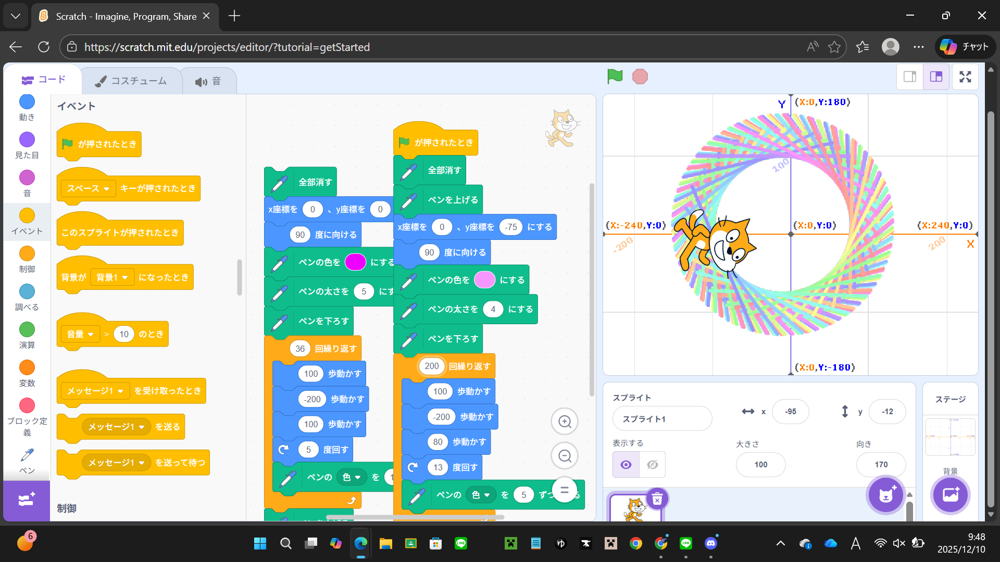
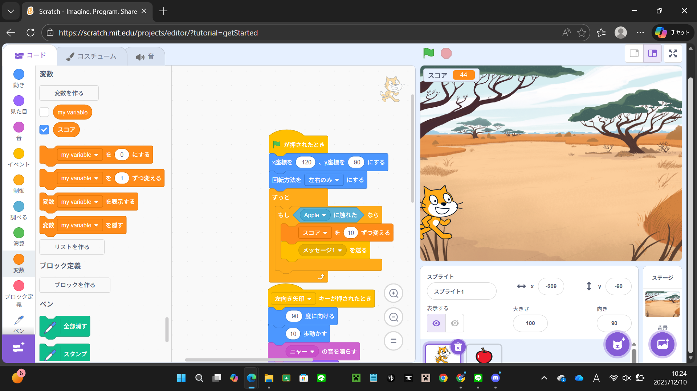

1週目のレポート ： 公大高専１年実習I-1
2b班42番 わらびもち
第1週目
1-1 サイエンスアート

1.内容
同じ行動を回数を指定して繰り返すことで、左右対称に近しいものができた。
ほかにもユーザーと作成者の見れるところが違ったり、最初の色を明度や鮮度、色の種類など
細かく色を使い分けれることが分かった。
2.感想
幾何学的な模様を作るなら100歩進んで₋200歩進み、また100歩進むのではなく、
100歩進んで₋200歩進み、80歩進んだり、逆に80歩進んで₋200歩進み、100歩進むなど
同じ場所に戻ってこないようにすると幾何学的な絵が作れると思った。
1-2 ゲーム

1.内容
スクリプトを動かすにはサイエンスアートの時は旗マークのところだけだったが、
今回のゲーム製作で旗だけでなく矢印キーやスペースキーなどでも動かせることがわかり、
ほかにもメッセージを送りそれを受けっとて
メッセージを受け取ったスクリプトが見えなくなるようにできることが分かった。
2.感想
変数を使うとメッセージを送信する時間を決めることができるし、
時間制限を作ることができたりするので変数は便利だなと思ったのと、
メッセージはスクリプト間でのタイミングの共有ができるので、
メッセージも変数に次いで便利だなと感じた。
1-3 ホームページ作成
私のホームページ
1.内容
githubのアカウントを作成し、作成したアカウントで
ホームページを作成し、写真をアップロードしたり、
内容や感想を入力してページに乗せたりした。
2.感想
githubについては何回か聞いたことはあるが、実際に触ったことがなかったけど
今回の実験実習で初めて触って面白いなと思った。
ほかにもコマンドをいろいろ知れてもっとコマンドについて知ってみたいと思った。
各ページへのリンク
1週目のレポート
2週目のレポート
3週目のレポート
私のホームページ